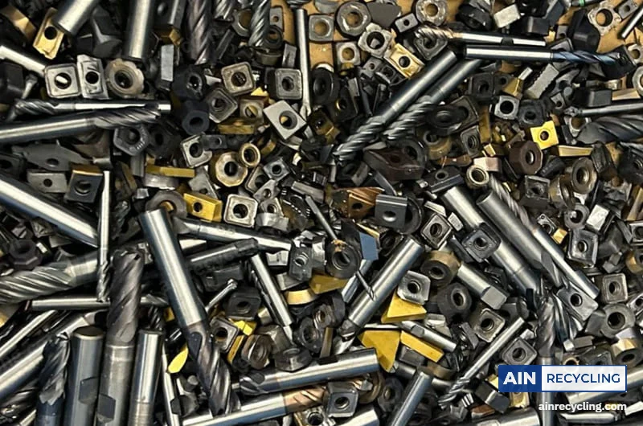

1. Das Gewicht
Hartmetall ist etwa doppelt so dicht wie Stahl: 14 bis 15 g/cm³ gegenüber 7,8 bei Stahl. Nehmen Sie zwei Werkzeuge derselben Größe: Das aus Hartmetall liegt deutlich schwerer in der Hand.
2. Der Magnet
Ein Magnet haftet stark an Schnellarbeitsstahl (HSS) und Werkzeugstahl. Hartmetall zieht er wegen des wenigen Kobalts darin kaum an. Was stark haftet, kommt zur Seite.
3. Die Kennzeichnungen
- Auf dem Schaft eines Bohrers oder Fräsers: „HM“ oder „VHM“ (Hartmetall, Vollhartmetall), „carbide“ oder „solid carbide“.
- Auf einer Wendeplattenschachtel: eine ISO-Sorte wie P25, M20 oder K10.
- „HSS“, „HSS-E“ oder „HSS-Co“: Das ist Schnellarbeitsstahl, kein Hartmetall.
Die Fälle, die täuschen
- Keramik- und Cermet-Wendeplatten haben dieselbe Form und dieselben ISO-Codes (CNMG…) wie Hartmetall, sind aber deutlich leichter. Wir kaufen sie nicht an.
- Gelötete Werkzeuge haben eine Hartmetallschneide, die auf einen Stahlkörper gelötet ist: nach Prüfung.
- Beschichtungen in Gold, Schwarz oder Blau ändern nichts: Es ist beschichtetes Hartmetall, zum selben Preis angekauft.

Unsicher? Senden Sie uns ein Foto per WhatsApp: Wir sagen Ihnen, was es ist.
Sie haben Hartmetall zu verkaufen?
47 €/kg per Paket, kostenloses Etikett, Preisgarantie 7 Tage. Größere Mengen holen wir ab.
Mein Hartmetall verkaufen Ein Unternehmen? Angebot anfordern